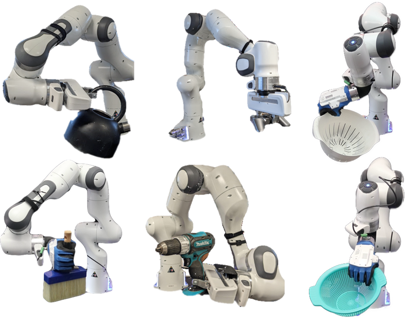
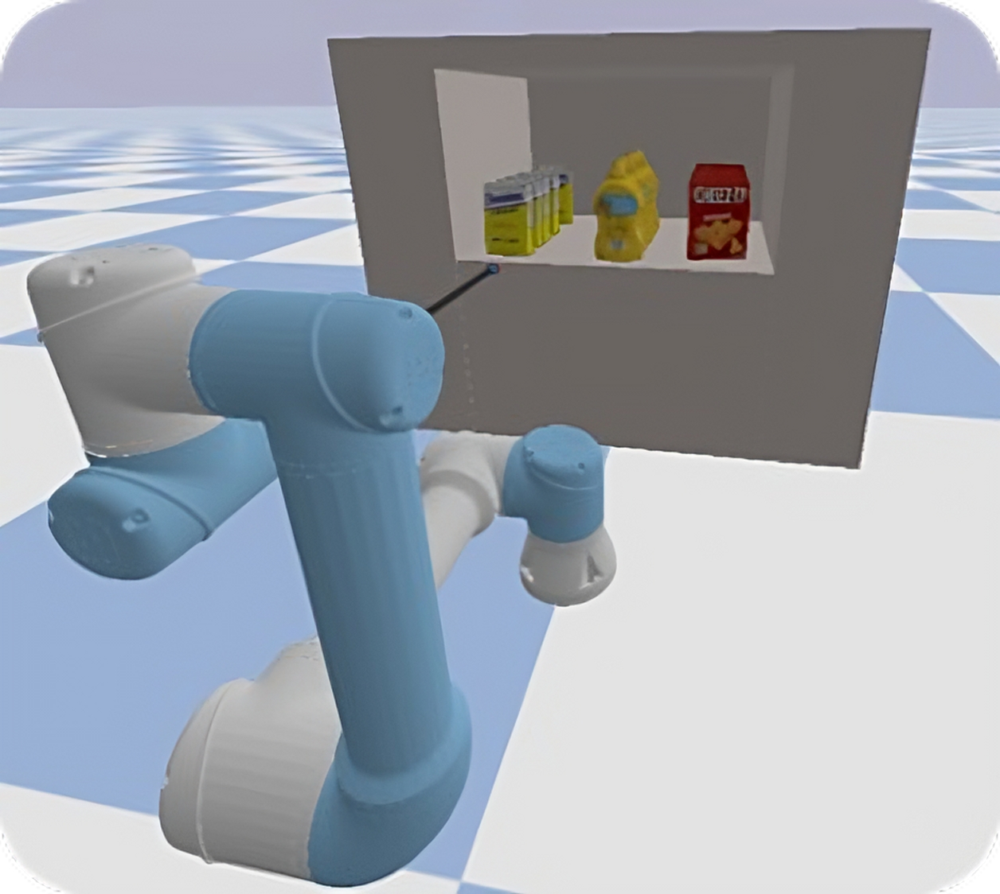
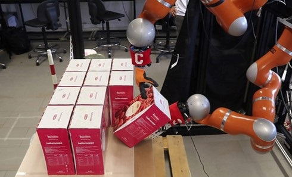
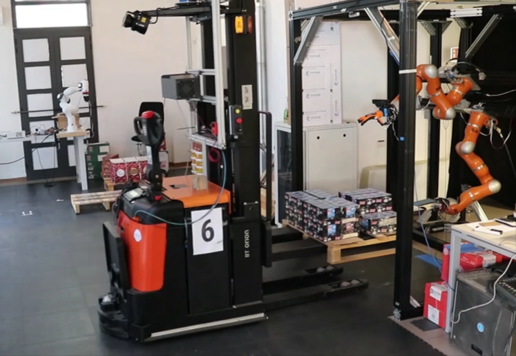
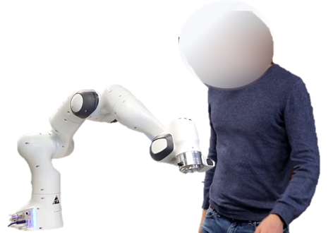
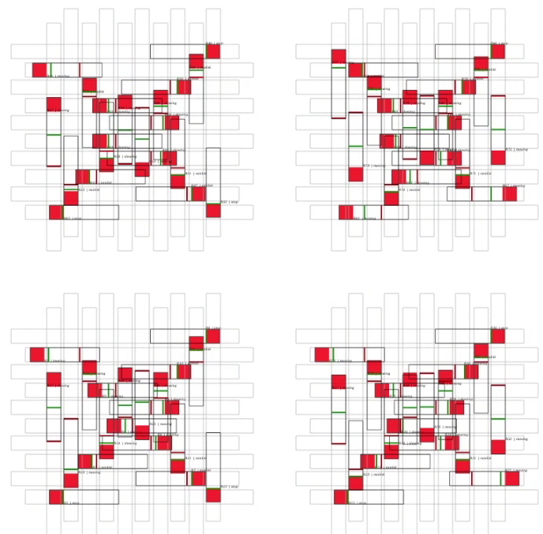

About
I am a robotics researcher at the Research Center “E. Piaggio” of the University of Pisa. I completed my Ph.D. in Robotics at Pisa in 2023, including a period as a visiting student researcher at the Stanford Artificial Intelligence Laboratory (SAIL), Stanford University.
My work sits at the crossroads of robotics, artificial intelligence and human-robot interaction: autonomous manipulation, grasp planning and optimal trajectory planning for collaborative robots operating in unstructured, interaction-rich environments.
I am also co-founder of XStar Motion, a start-up that transforms the way the motion of machines is planned.
Experience & education
Work
-
2023 – presentPostdoctoral ResearcherResearch Center “E. Piaggio”, University of Pisa
-
2021 – presentCo-FounderXStar Motion
-
Feb – Jun 2023Teaching AssistantUniversity of Pisa
-
Apr – Sep 2022Visiting Student ResearcherStanford University (SAIL)
-
Mar – Jun 2020Teaching AssistantUniversity of Pisa
-
2018 – 2019Junior ResearcherResearch Center “E. Piaggio”
Education
-
2019 – 2023Ph.D. in RoboticsUniversity of Pisa
-
2015 – 2018M.Sc. Robotics and AutomationUniversity of Pisa
-
2012 – 2015B.Sc. ElectronicsUniversity of Pisa
Research
I develop planning and decision-making algorithms for collaborative robots in unstructured environments, within international, industry-oriented projects such as ILIAD, DARKO and SOPHIA. My work has been published in journals such as RA-L, RA-M and T-ASE, and at conferences including ICRA, IROS, CASE and Humanoids. See the full list on Google Scholar.
Dexterous manipulation
Planning, implementing and testing manipulation algorithms on dual-arm platforms.
Grasp planning
Grasp planners for robots with rigid and compliant grippers.
Safe trajectory planning
Optimal, safety-aware trajectories for robots working next to humans.
Projects

Manipulation in Clutter
Learn more →
Dual-Arm Manipulation
Learn more →
Planning for Multi-Robot Systems
Learn more →
Safety-aware Trajectory Planning
Learn more →
Distributed Fleet Coordination
Learn more →XStar Motion
My research on optimal trajectory planning led to XStar Motion, a start-up that aims to transform the way the motion of machines is planned.
We developed X*Solve, an algorithm that computes the optimal trajectory along a working-cycle path while respecting the machine's velocity, acceleration and jerk limits. It runs online, delivering optimized references at the controller frequency, and integrates with both robots and CNC machines.
XStar Motion combines 20 years of automation expertise from EUROSOFT with cutting-edge research in motion planning and control from the University of Pisa. Today's AI theory, algorithms and computing power make it possible to plan the motion of every machine to exploit its full potential, and to update it autonomously for every task.